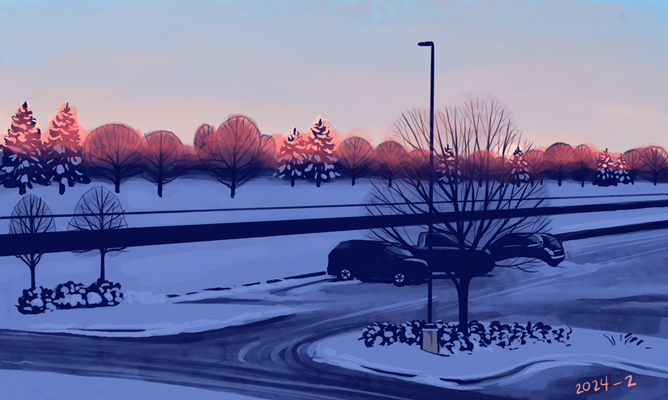
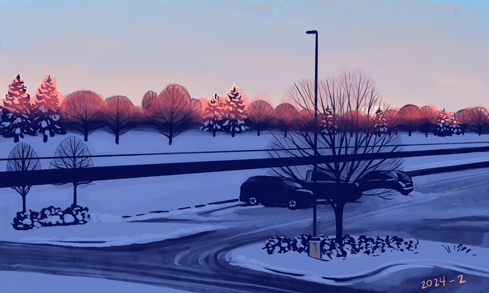
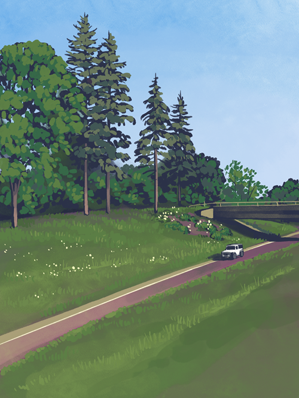
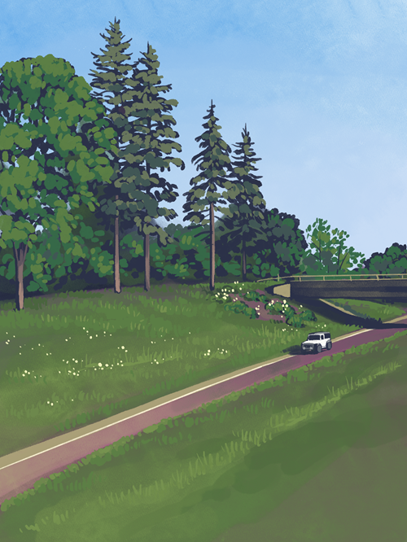

Eagan
I found a job in Eagan that's on a bus line, to facilitate by car free life. It makes for a lot of time spent walking and waiting in spaces that most people don't usually go, and I really like how that makes me engage with the space.
Except in the winter, because Eagan doesn't clear the sidewalks.
Taking the bus also means i can take photos from the window in a way you never could while driving, and there's some very nice scenery on 35-E.
 


 
